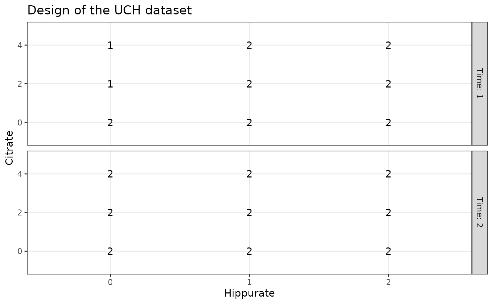
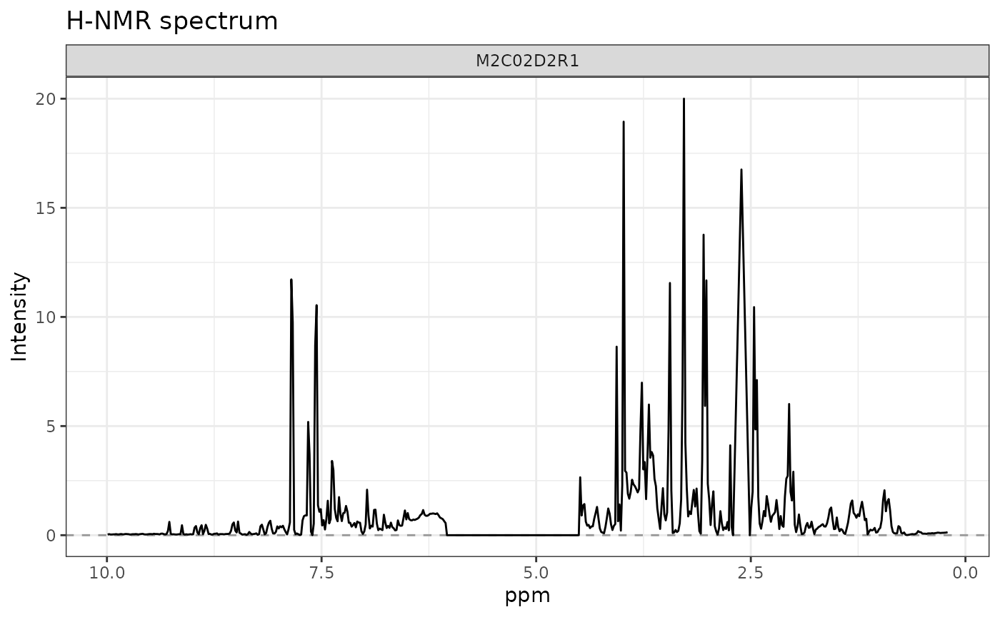
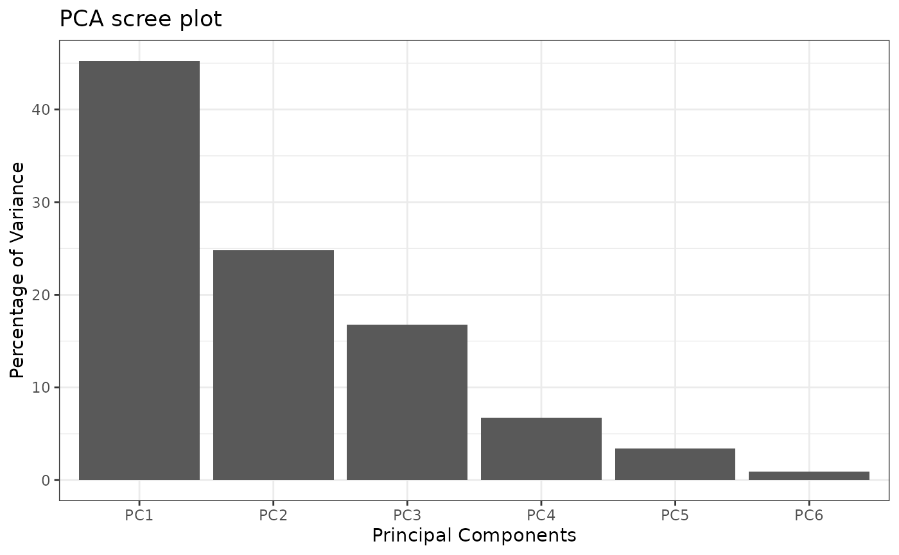
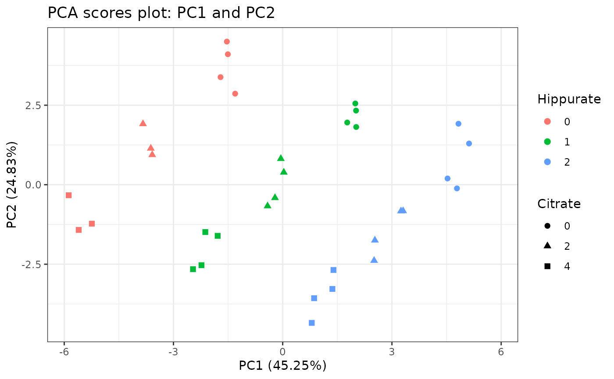
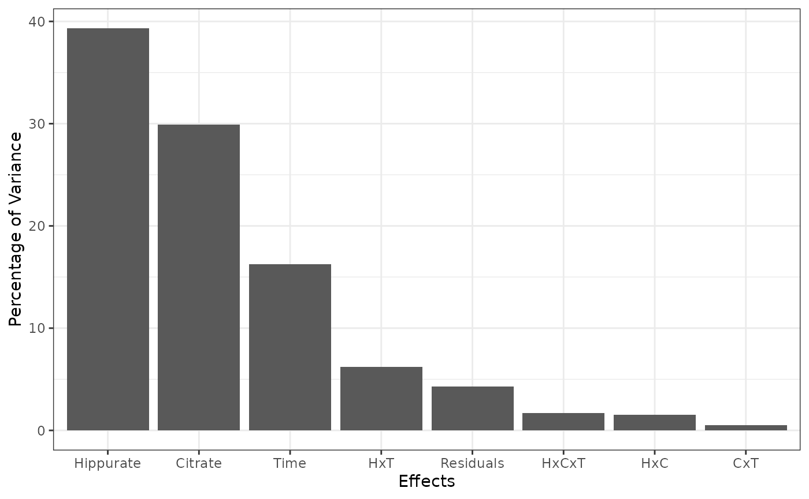
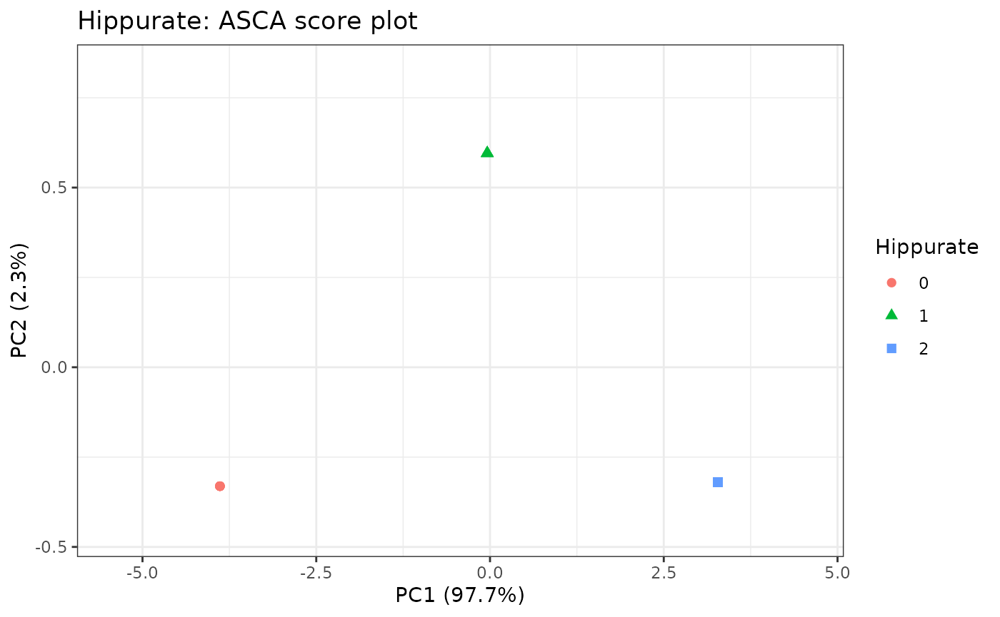
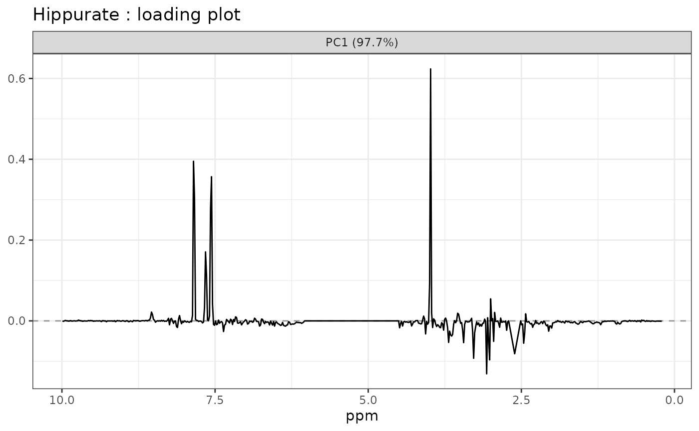
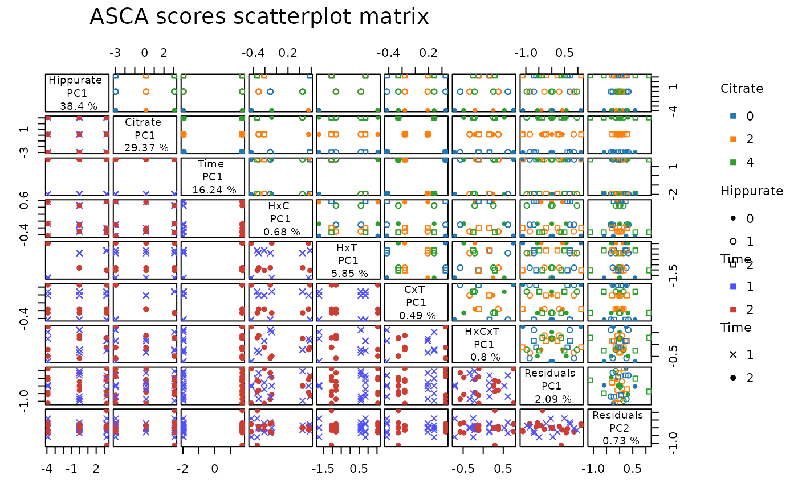

Installation
Note that if you would like to build the vignettes, you have to
install BiocStyle (from Bioconductor) and
rmarkdown packages before installing limpca
with the following command:
remotes::install_github("ManonMartin/limpca", dependencies = TRUE, build_vignettes = TRUE).
For any enquiry, you can send an email to the package authors: bernadette.govaerts@uclouvain.be ; michel.thiel@uclouvain.be or manon.martin@uclouvain.be
Short application on the UCH dataset
Data object
In order to use the limpca core functions, the data need to be
formatted as a list (informally called an lmpDataList) with the
following elements: outcomes (multivariate matrix),
design (data.frame) and formula (character
string). The UCH data set is already formatted
appropriately and can be loaded from limpca with the
data function.
data("UCH")
str(UCH)
#> List of 3
#> $ design :'data.frame': 34 obs. of 5 variables:
#> ..$ Hippurate: Factor w/ 3 levels "0","1","2": 1 1 1 1 1 1 2 2 2 2 ...
#> ..$ Citrate : Factor w/ 3 levels "0","2","4": 1 1 2 2 3 3 1 1 2 2 ...
#> ..$ Dilution : Factor w/ 1 level "diluted": 1 1 1 1 1 1 1 1 1 1 ...
#> ..$ Day : Factor w/ 2 levels "2","3": 1 1 1 1 1 1 1 1 1 1 ...
#> ..$ Time : Factor w/ 2 levels "1","2": 1 2 1 2 1 2 1 2 1 2 ...
#> $ outcomes: num [1:34, 1:600] 0.0312 0.0581 0.027 0.0341 0.0406 ...
#> ..- attr(*, "dimnames")=List of 2
#> .. ..$ : chr [1:34] "M2C00D2R1" "M2C00D2R2" "M2C02D2R1" "M2C02D2R2" ...
#> .. ..$ X1: chr [1:600] "9.9917004" "9.9753204" "9.9590624" "9.9427436" ...
#> $ formula : chr "outcomes ~ Hippurate + Citrate + Time + Hippurate:Citrate + Time:Hippurate + Time:Citrate + Hippurate:Citrate:Time"Alternatively, the lmpDataList can be created with the function
data2LmpDataList :
- from scratch:
UCH2 <- data2LmpDataList(
outcomes = UCH$outcomes,
design = UCH$design,
formula = UCH$formula
)
#> | dim outcomes: 34x600
#> | formula: ~ Hippurate + Citrate + Time + Hippurate:Citrate + Time:Hippurate + Time:Citrate + Hippurate:Citrate:Time
#> | design variables (5):
#> * Hippurate (factor)
#> * Citrate (factor)
#> * Dilution (factor)
#> * Day (factor)
#> * Time (factor)- or from a
SummarizedExperiment:
se <- SummarizedExperiment(
assays = list(
counts = t(UCH$outcomes)), colData = UCH$design,
metadata = list(formula = UCH$formula)
)
UCH3 <- data2LmpDataList(se, assay_name = "counts")
#> | dim outcomes: 34x600
#> | formula: ~ Hippurate + Citrate + Time + Hippurate:Citrate + Time:Hippurate + Time:Citrate + Hippurate:Citrate:Time
#> | design variables (5):
#> * Hippurate (factor)
#> * Citrate (factor)
#> * Dilution (factor)
#> * Day (factor)
#> * Time (factor)SummarizedExperiment is a generic data container that
stores rectangular matrices of experimental results. See Morgan et al. (2023) for more information.
Data visualisation
The design can be visualised with plotDesign().
# design
plotDesign(
design = UCH$design, x = "Hippurate",
y = "Citrate", rows = "Time",
title = "Design of the UCH dataset"
)
# row 3 of outcomes
plotLine(
Y = UCH$outcomes,
title = "H-NMR spectrum",
rows = c(3),
xlab = "ppm",
ylab = "Intensity"
)
PCA
ResPCA <- pcaBySvd(UCH$outcomes)
pcaScreePlot(ResPCA, nPC = 6)
pcaScorePlot(
resPcaBySvd = ResPCA, axes = c(1, 2),
title = "PCA scores plot: PC1 and PC2",
design = UCH$design,
color = "Hippurate", shape = "Citrate",
points_labs_rn = FALSE
)
Model estimation and effect matrix decomposition
# Model matrix generation
resMM <- lmpModelMatrix(UCH)
# Model estimation and effect matrices decomposition
resEM <- lmpEffectMatrices(resMM)Effect matrix test of significance and importance measure
# Effects importance
resEM$varPercentagesPlot
# Bootstrap tests
resBT <- lmpBootstrapTests(resLmpEffectMatrices = resEM, nboot = 100)
resBT$resultsTable
#> % of variance (T III) Bootstrap p-values
#> Hippurate 39.31 < 0.01
#> Citrate 29.91 < 0.01
#> Time 16.24 < 0.01
#> Hippurate:Citrate 1.54 0.11
#> Hippurate:Time 6.23 < 0.01
#> Citrate:Time 0.54 0.31
#> Hippurate:Citrate:Time 1.68 0.07
#> Residuals 4.30 -ASCA decomposition
# ASCA decomposition
resASCA <- lmpPcaEffects(resLmpEffectMatrices = resEM, method = "ASCA")
# Scores Plot for the hippurate
lmpScorePlot(resASCA,
effectNames = "Hippurate",
color = "Hippurate", shape = "Hippurate"
)
# Loadings Plot for the hippurate
lmpLoading1dPlot(resASCA,
effectNames = c("Hippurate"),
axes = 1, xlab = "ppm"
)
# Scores ScatterPlot matrix
lmpScoreScatterPlotM(resASCA,
PCdim = c(1, 1, 1, 1, 1, 1, 1, 2),
modelAbbrev = TRUE,
varname.colorup = "Citrate",
varname.colordown = "Time",
varname.pchup = "Hippurate",
varname.pchdown = "Time",
title = "ASCA scores scatterplot matrix"
)
sessionInfo
sessionInfo()
#> R version 4.3.3 (2024-02-29)
#> Platform: x86_64-pc-linux-gnu (64-bit)
#> Running under: Ubuntu 22.04.4 LTS
#>
#> Matrix products: default
#> BLAS: /usr/lib/x86_64-linux-gnu/openblas-pthread/libblas.so.3
#> LAPACK: /usr/lib/x86_64-linux-gnu/openblas-pthread/libopenblasp-r0.3.20.so; LAPACK version 3.10.0
#>
#> locale:
#> [1] LC_CTYPE=C.UTF-8 LC_NUMERIC=C LC_TIME=C.UTF-8
#> [4] LC_COLLATE=C.UTF-8 LC_MONETARY=C.UTF-8 LC_MESSAGES=C.UTF-8
#> [7] LC_PAPER=C.UTF-8 LC_NAME=C LC_ADDRESS=C
#> [10] LC_TELEPHONE=C LC_MEASUREMENT=C.UTF-8 LC_IDENTIFICATION=C
#>
#> time zone: UTC
#> tzcode source: system (glibc)
#>
#> attached base packages:
#> [1] stats4 stats graphics grDevices utils datasets methods
#> [8] base
#>
#> other attached packages:
#> [1] SummarizedExperiment_1.32.0 Biobase_2.62.0
#> [3] GenomicRanges_1.54.1 GenomeInfoDb_1.38.8
#> [5] IRanges_2.36.0 S4Vectors_0.40.2
#> [7] BiocGenerics_0.48.1 MatrixGenerics_1.14.0
#> [9] matrixStats_1.2.0 limpca_0.99.6
#>
#> loaded via a namespace (and not attached):
#> [1] gtable_0.3.4 xfun_0.43 bslib_0.6.2
#> [4] ggplot2_3.5.0 ggrepel_0.9.5 lattice_0.22-5
#> [7] vctrs_0.6.5 tools_4.3.3 bitops_1.0-7
#> [10] generics_0.1.3 parallel_4.3.3 tibble_3.2.1
#> [13] fansi_1.0.6 highr_0.10 pkgconfig_2.0.3
#> [16] Matrix_1.6-5 tidyverse_2.0.0 desc_1.4.3
#> [19] lifecycle_1.0.4 GenomeInfoDbData_1.2.11 farver_2.1.1
#> [22] stringr_1.5.1 compiler_4.3.3 textshaping_0.3.7
#> [25] munsell_0.5.0 ggsci_3.0.3 codetools_0.2-19
#> [28] htmltools_0.5.8 sass_0.4.9 RCurl_1.98-1.14
#> [31] yaml_2.3.8 tidyr_1.3.1 pkgdown_2.0.7
#> [34] pillar_1.9.0 crayon_1.5.2 jquerylib_0.1.4
#> [37] DelayedArray_0.28.0 cachem_1.0.8 iterators_1.0.14
#> [40] abind_1.4-5 foreach_1.5.2 tidyselect_1.2.1
#> [43] digest_0.6.35 stringi_1.8.3 reshape2_1.4.4
#> [46] dplyr_1.1.4 purrr_1.0.2 labeling_0.4.3
#> [49] fastmap_1.1.1 grid_4.3.3 colorspace_2.1-0
#> [52] cli_3.6.2 SparseArray_1.2.4 magrittr_2.0.3
#> [55] S4Arrays_1.2.1 utf8_1.2.4 withr_3.0.0
#> [58] scales_1.3.0 rmarkdown_2.26 XVector_0.42.0
#> [61] ragg_1.3.0 memoise_2.0.1 evaluate_0.23
#> [64] knitr_1.45 doParallel_1.0.17 rlang_1.1.3
#> [67] Rcpp_1.0.12 glue_1.7.0 jsonlite_1.8.8
#> [70] plyr_1.8.9 R6_2.5.1 systemfonts_1.0.6
#> [73] fs_1.6.3 zlibbioc_1.48.2